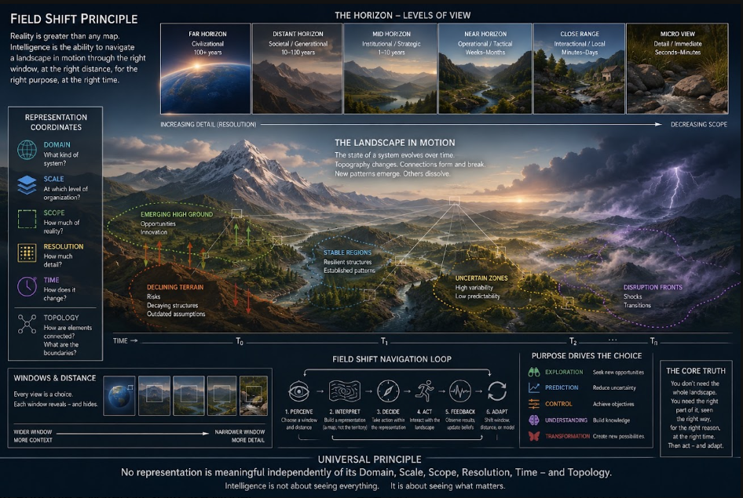

Forskningsöversikt
FieldShift-principen och Water Staircase
Hur väljer vi rätt representation för att förstå ett system som förändras? FieldShift beskriver valet av observationsperspektiv. Water Staircase beskriver hur systemets dynamik kan utvecklas.
Thomas Hedlund Leijon

Så hänger delarna ihop
Representation
FieldShift väljer domän, skala, omfång, upplösning, tidshorisont och topologi utifrån uppgiften.
Systemdynamik
Water Staircase beskriver stabilitet, drift, acceleration, kritiska övergångar, kollaps och återhämtning. Modellen använder potentiallandskap och attraktionsbassänger för att beskriva möjliga dynamiska förlopp.
Återkoppling
Navigationsloopen förbinder observation, tolkning, beslut, handling och återkoppling. Nya observationer kan ändra både skattningen av systemets fas och valet av representation.
Vetenskaplig status
Manuset skiljer mellan symboliskt kontrollerade identiteter, matematiska resultat under angivna antaganden, syntetiska simuleringar och empiriska hypoteser som behöver prövas. Geometriska trösklar behandlas som möjliga modellparametrar. V-Dem-protokollet i manuset är ett utkast.
Forskningspostrar
Öppna en poster för att läsa detaljer i full storlek.

